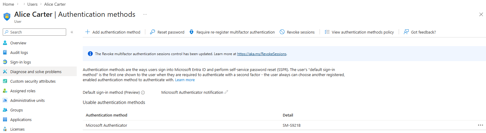
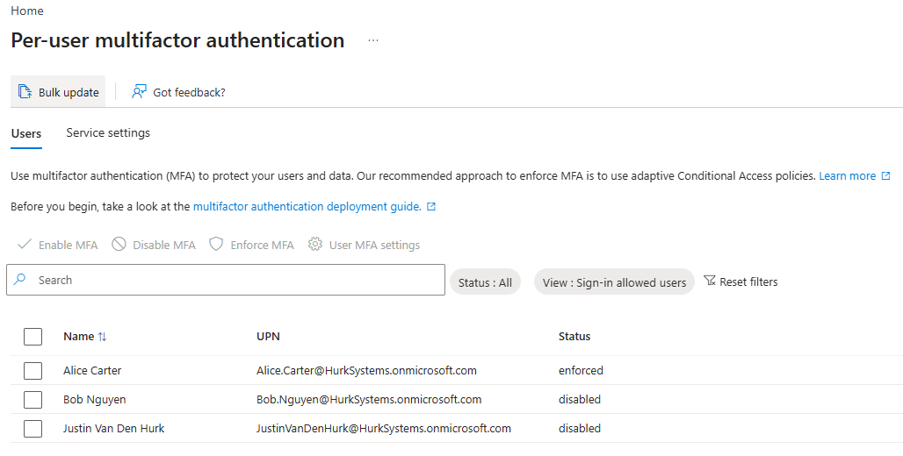
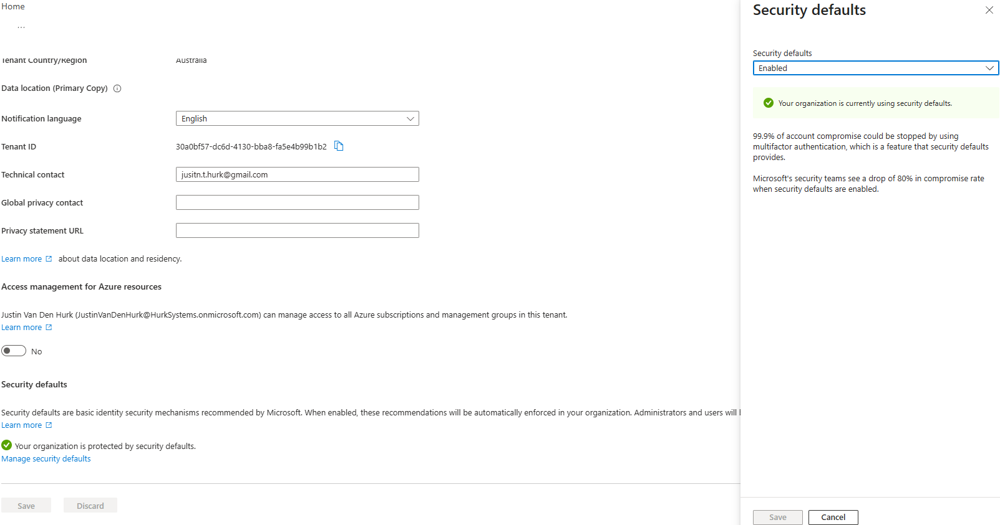
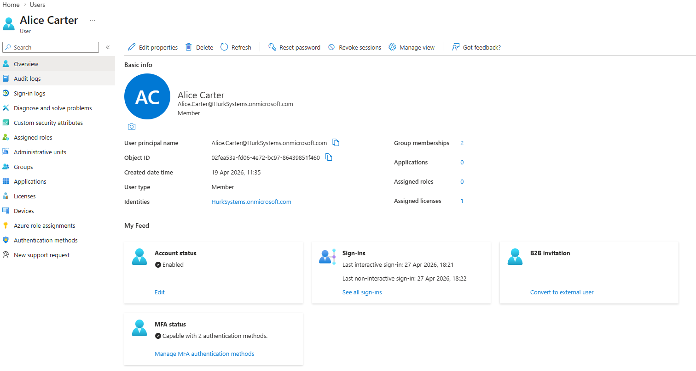

MS-102 Lab 4 - Authentication and Multi-Factor Authentication
Published: April 28, 2026
Overview
This lab demonstrates how to configure and test Multi-Factor Authentication (MFA) in Microsoft 365. It focuses on improving sign-in security, understanding authentication methods, and comparing per-user MFA with Security Defaults.
Objective
Manage authentication in Microsoft 365 where:
- Multi-Factor Authentication (MFA) is configured
- User sign-in security is improved
- Authentication methods are controlled
Requirements
Devices / Tools
- Microsoft 365 tenant
- Admin access account
- Test user accounts (Alice / Bob)
Tasks
Task 1 - Review Authentication Methods
Go to:
- Entra ID > Users > Authentication methods
Explore:
- Microsoft Authenticator
- SMS
- Temporary Access Pass
What authentication methods are available?
The available authentication methods include Microsoft Authenticator, phone (SMS), email, and Temporary Access Pass.
Which method is most secure?
The most secure authentication method is Microsoft Authenticator, especially when using push notifications or number matching.

Task 2 - Enable MFA (Per User)
Go to:
- MS365 Admin Center > Users > Active users
Select a user:
- Alice
Then:
- Click Manage multi-factor authentication
- Enable MFA
Selected Manage multi-factor authentication and was redirected to Entra ID. Applied MFA to Alice in Entra ID.

Task 3 - Register MFA
Log in as Alice:
- https://portal.office.com
Complete MFA setup using Microsoft Authenticator (recommended).
Task 4 - Test MFA
Log out and log back in as Alice.
What happens during login?
During login, the user is prompted to set up MFA and verify their identity using an authentication method such as Microsoft Authenticator.
What additional step is required?
The additional step is verifying the login using a second factor, such as approving a notification in the Microsoft Authenticator app.
MFA significantly improves security by requiring a second form of verification, making it much harder for attackers to access accounts.
Task 5 - Explore Security Defaults
Go to:
- Entra ID > Properties (Tenant properties)
Find:
- Security defaults
What do security defaults enforce?
Security Defaults enforce basic identity security protections across the tenant, such as requiring MFA and blocking legacy authentication.
What happens when security defaults are enabled?
When Security Defaults are enabled, MFA is enforced for users and administrators, and insecure authentication methods are blocked.

Task 6 - Compare MFA vs Security Defaults
What is the difference between per-user MFA and Security Defaults?
Per-user MFA allows administrators to manually enable MFA for specific users, while Security Defaults automatically enforce MFA and other security protections across the entire tenant without requiring manual configuration.
When would you use Security Defaults instead of manual MFA?
Security Defaults are used in small or new environments where basic security needs to be applied quickly without complex configuration.
Task 7 - Verify in Entra ID
Go to:
- Entra ID > Users > Alice
Check:
- Authentication methods
- Sign-in activity

Knowledge Test
1. What is Multi-Factor Authentication (MFA)?
MFA is a security method that requires users to verify their identity using two or more factors, such as a password and a mobile authentication app.
2. Why is MFA important?
MFA is important because it helps prevent unauthorized access to your account, even if a password is compromised.
3. What is the difference between password-only authentication and MFA?
Password-only authentication uses a single factor, while MFA requires multiple factors to verify identity.
4. What is the most secure authentication method?
Microsoft Authenticator is the most secure authentication method.
5. What do Security Defaults provide?
Security Defaults provide a set of basic security protections, including enforcing MFA, blocking legacy authentication, and protecting against common attacks.